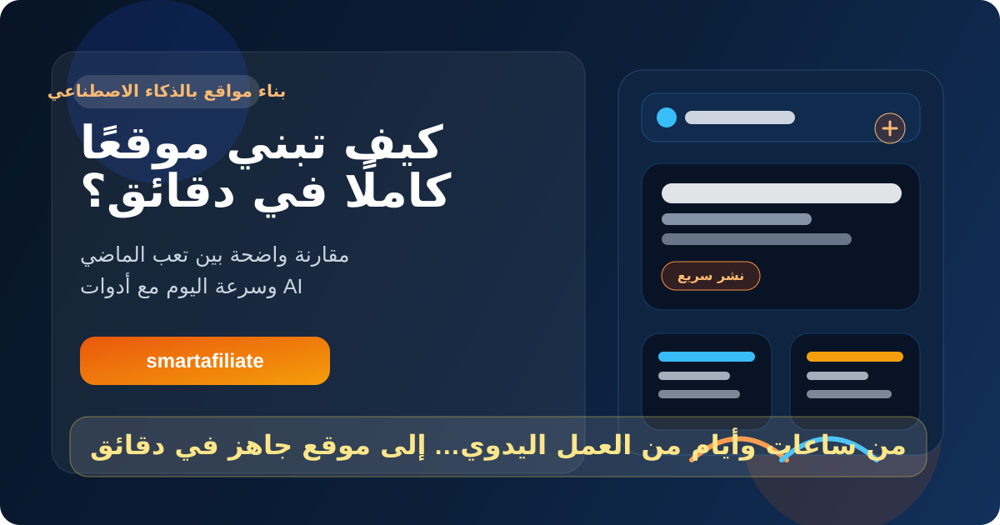
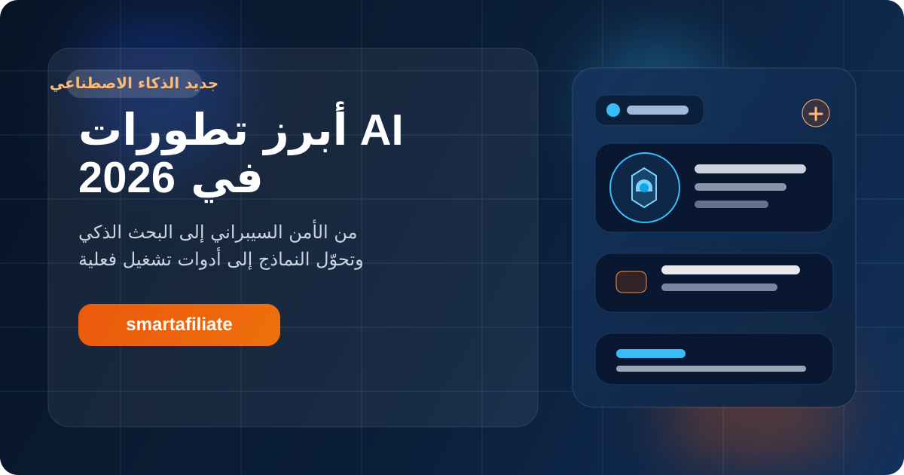
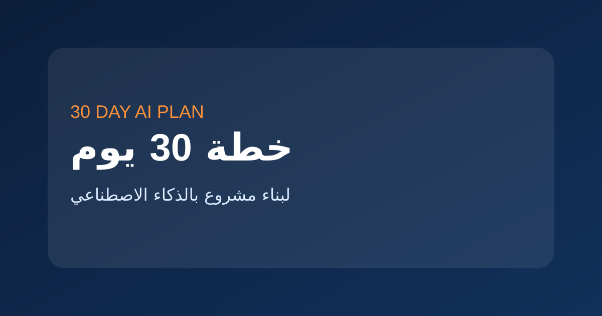
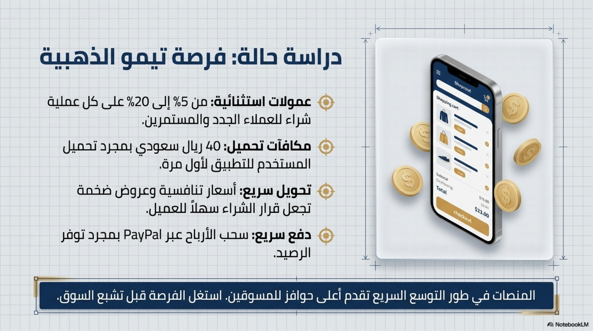

هل تقبل جوجل المحتوى المكتوب بالذكاء الاصطناعي؟ الحقيقة التي يتجاهلها كثيرون
تحليل عربي عملي يشرح موقف جوجل الحقيقي من محتوى AI، ولماذا تكون الجودة هي العامل الحاسم لا طريقة الكتابة.
فهرس عربي منظم للمقالات المستقلة حول الذكاء الاصطناعي. خطط عملية، مقارنات أدوات، وتطبيقات حقيقية.
ابدأ من المسار الأقرب لهدفك: أدوات جاهزة، مقارنة بين أفضل الخدمات، أو خطة تعلم عملية.
اختر المقال الذي يناسب احتياجك الحالي وابدأ القراءة مباشرة

تحليل عربي عملي يشرح موقف جوجل الحقيقي من محتوى AI، ولماذا تكون الجودة هي العامل الحاسم لا طريقة الكتابة.

مقال تحليلي يشرح كيف يمكن للذكاء الاصطناعي أن يرفع مستوى المواقع العربية أو يغرقها في محتوى سريع متشابه.

متى يساعد محتوى AI موقعك على الظهور، ومتى يتحول إلى سبب لفقدان الثقة والترتيب؟

شرح واضح للحقيقة خلف فكرة العقوبة، ولماذا يتم تجاهل كثير من المحتوى الضعيف بدلًا من معاقبته مباشرة.

تحليل عملي لعلاقة الذكاء الاصطناعي بالسيو، ومتى ينجح المحتوى الآلي عندما يخدم نية البحث والقيمة الحقيقية.

مقال جاد يشرح كيف يمكن للذكاء الاصطناعي أن ينقذ مواقع عربية كثيرة أو يغرقها في سرعة بلا معنى.

من يملك الرؤية والجودة والثقة سيصمد، ومن يعتمد فقط على النشر السريع قد يختفي بسرعة.

كيف يمكن للأداة نفسها أن تصبح رافعة للنمو أو اختبارًا قاسيًا للبقاء حسب طريقة استخدامها.

مقال تعليمي جذاب يشرح كيف اختصر الذكاء الاصطناعي بناء المواقع من أيام وساعات إلى دقائق، مع مقارنة واضحة بين الماضي واليوم.

ملخص عملي لأبرز التحولات الحالية في الذكاء الاصطناعي، من الأمن السيبراني والبحث الذكي إلى البرمجة والبنية التحتية.

مقارنة عملية بين ChatGPT وJasper وCopy.ai وWritesonic. تعرف على الأداة المناسبة حسب نوع استخدامك.

خارطة عملية للتحول من التعلم إلى أصل رقمي قابل للنمو خلال ثلاثة أشهر.

خطة قصيرة تساعدك على الانتقال من الفكرة إلى أول محتوى وصفحة تحويل خلال شهر واحد.

مجموعة أدوات عملية للمحتوى، التصميم، والتحليل تساعدك على بناء نظام أفلييت أسرع.

نظام بسيط يربط أدوات الذكاء الاصطناعي بالمحتوى والتحويل بدل استخدامها بشكل متفرق.

هيكل عملي للمقال يساعد على الظهور والوضوح ورفع فرص التحويل داخل المراجعات والمقالات المقارنة.

خطة تعلم متكاملة تساعدك على تنظيم المسار بدل التشتت بين الأدوات والمصادر.

دليل مختصر لاختيار برامج أفلييت مناسبة للسوق العربي مع عوامل الاختيار الصحيحة للمبتدئ.

كيف تنقل الزائر من الوعي إلى الاهتمام ثم القرار داخل الصفحات التحويلية والمراجعات.

استراتيجية عملية لرفع الثقة وتحسين الصفحات الرابحة وزيادة النقرات بدل التوسع العشوائي.

شرح واضح للمبتدئين: ما هو الأفلييت، كيف تبدأ، وكيف تختار أول مجال وصفحة ومصدر زيارات.

الأخطاء التي تجعل كثيرًا من المبتدئين ينشرون كثيرًا ويكسبون قليلًا وكيف تتجنبها عمليًا.
الخطوة التالية الأفضل: لا تقف عند المقالات العامة. انتقل الآن إلى صفحة المراجعة أو المقارنة الأقرب لما تريد استخدامه فعليًا.